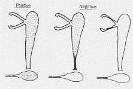
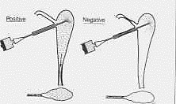

Part II · Epiphora work-up
Jones dye testing
Type I test (primary)
- Instill a drop of fluorescein in the conjunctival sac and place a cotton pellet soaked in xylocaine spray under the inferior turbinate of the nose.
- If the cotton is stained with fluorescein → the lacrimal passages are patent.
- If no fluorescein is recovered → proceed to the type II Jones test.
Type II test (secondary)
- The lacrimal passage is irrigated with saline.
- If fluorescein is recovered → there is partial or functional obstruction.
- If fluorescein is not recovered and saline does not reach the nose → there is complete block.

